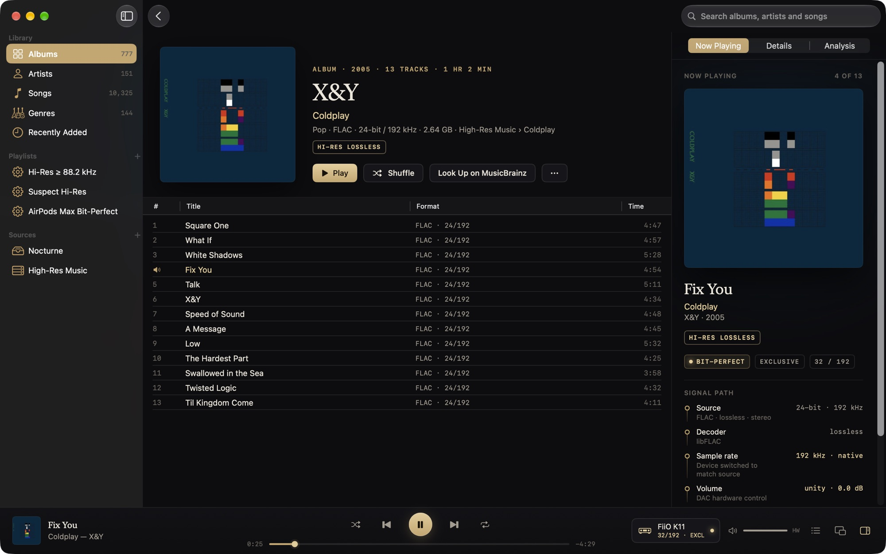
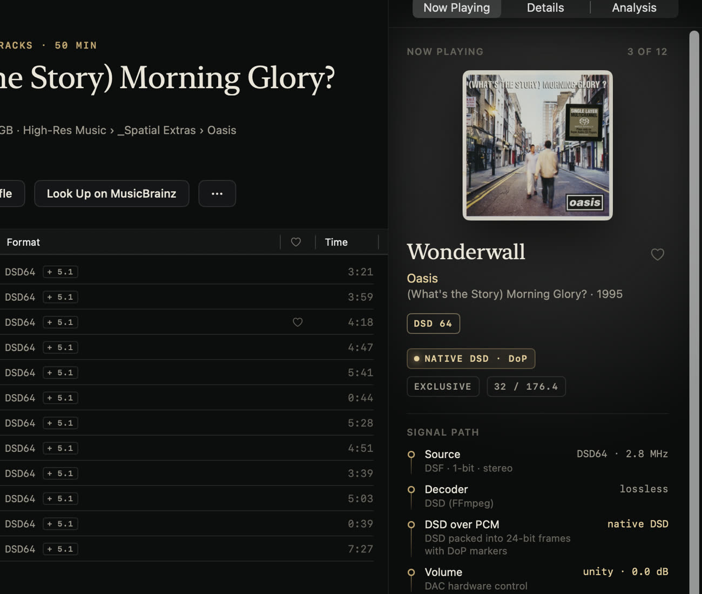
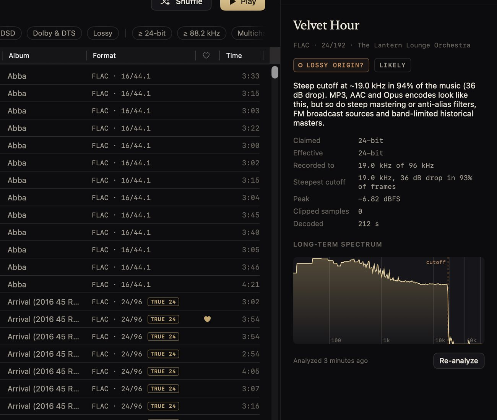
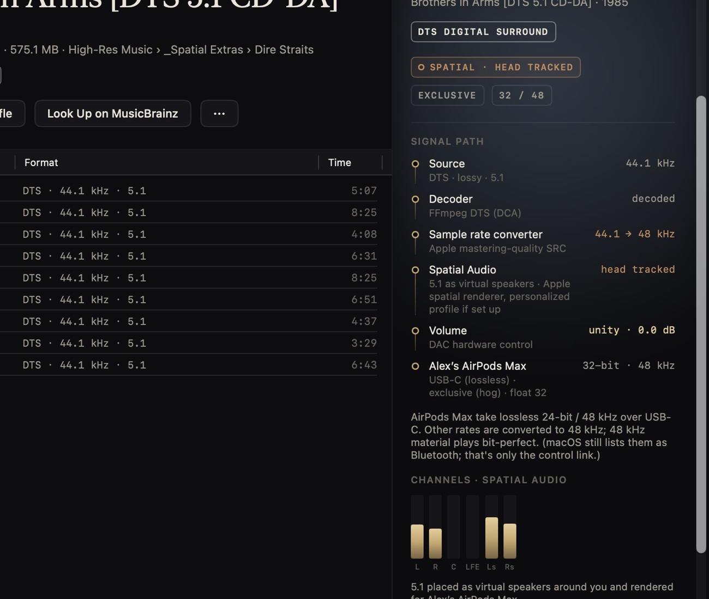
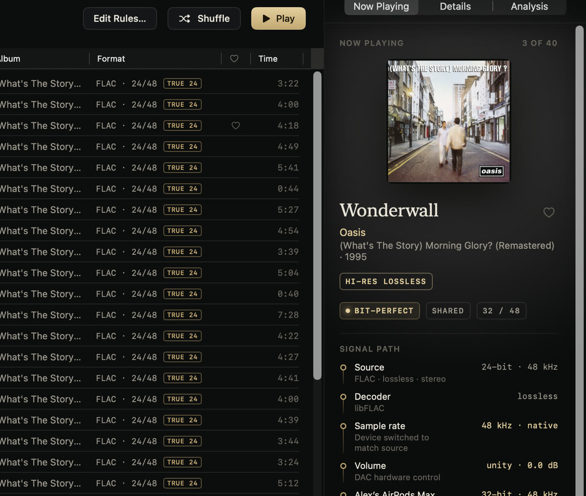
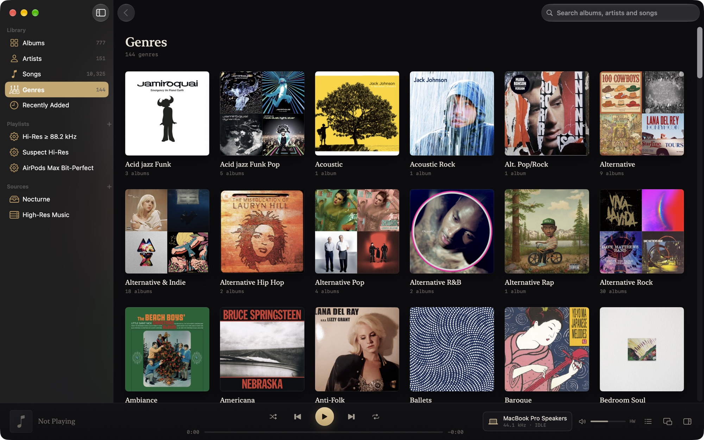

Vespertine
VespertineThe Mac music player that tells you the truth.
Vespertine switches your DAC to every track's native format, shows BIT-PERFECT only when nothing has touched the samples, plays DSD, Dolby Atmos and DTS, and catches the “hi-res” files that aren't. Free and open source.
macOS 26 Tahoe or later · Apple silicon & Intel · signed, notarized, updates itself · GPL-3.0

A 24-bit / 192 kHz FLAC, bit-perfect on a FiiO K11: the DAC was switched to the file's rate, and the signal path shows every stage.
Built for people who care what reaches the DAC.
Most players either hide what happens to the signal or hand you a settings maze. Vespertine does the right thing automatically, then shows its work.
An honest signal path
Brass means bit-perfect, and it only appears when it's literally true. Anything else is shown in copper with the reason.
Catches fake hi-res
Upsampled, padded, lossy-sourced and “AI-enhanced” files are flagged, with the spectrum and the measurements that prove it.
Surround, everywhere
SACD 5.1, DTS CDs, DTS-HD MA, TrueHD and Dolby Atmos, as head-tracked Spatial Audio on AirPods or channel for channel on a receiver.
Free, and yours
Open source under GPL-3.0. No account, no subscription, no telemetry. Your files are never changed unless you edit their tags.
Every track at its native rate and depth.
Vespertine switches the device to each file's format, from 16/44.1 to 32/768, and resamples only when the hardware can't run the rate, preferring the same family.
- Exclusive (hog) mode keeps other apps off the device, or share it and keep volume keys and the Digital Crown.
- Integer mode sends 32-bit integers straight to DACs that take them.
- Gapless, including CUE-sheet albums split from one file.
- Hands your DAC back at the rate and depth it had before, when Vespertine quits.

Find out which “hi-res” files aren't.
Every file can be analysed for its real bit depth, its real bandwidth and the fingerprints of lossy encoders and resamplers. Verdicts come with their evidence, and a Suspect Hi-Res playlist collects them.
- 16-bit padded into 24-bit containers
- Upsampled CD-quality masters sold as 96 or 192 kHz
- Lossy origin: MP3 or AAC transcoded to FLAC
- Synthetic high frequencies from SBR or “AI enhancement”

Your 5.1 discs, finally playable on a Mac.
DTS CDs, which most players turn into full-scale noise, play as real 5.1. SACD rips, Blu-ray mixes, TrueHD and DTS-HD Master Audio play channel for channel on a multichannel output, fold down on a stereo DAC, or render as head-tracked Spatial Audio on AirPods. Dolby Atmos goes through macOS's own renderer, as in Apple Music.
- Stereo and surround versions of an album are listed once; Vespertine plays whichever suits the output.
- Bitstream Dolby Digital, DD+ and DTS to a receiver, untouched.
- Export for Spatial Audio as binaural stereo or multichannel ALAC.

Lossless on AirPods Max, and it says so.
Connected with the USB-C cable, AirPods Max are recognised as a 24-bit / 48 kHz lossless device: 48 kHz music plays bit-perfect and everything else is converted with Apple's mastering-quality resampler, in plain view. Over Bluetooth, Vespertine tells you the link is AAC.

Browse like Apple Music. Manage like a librarian.
- Albums, artists, songs and genres with format, genre and decade filters.
- Search across everything, ignoring case and accents.
- Smart playlists in the units you think in: 24-bit, 88.2 kHz.
- Tag editor with backups and one-step revert, plus MusicBrainz enrichment that shows its confidence before writing anything.
- Network shares over SMB, NFS or WebDAV, with caching, Keep Offline and playback built for slow servers.
- Find Music searches every drive for your real music and leaves the clutter behind.

Plays almost anything you own.
| FLAC, ALAC, WAV, AIFF | Native rate and depth up to 32-bit / 768 kHz, CUE images .flac .m4a .wav .aiff .cue |
|---|---|
| DSD64 – DSD512 | DoP to DACs that take it, otherwise high-rate PCM .dsf .dff |
| Dolby Atmos | Dolby Digital Plus with Atmos, rendered by macOS .ec3 .m4a .mp4 |
| Dolby TrueHD, DTS-HD Master Audio | Lossless, can be bit-perfect; DTS:X and TrueHD Atmos play their bed .thd .dts .dtshd .mka |
| Dolby Digital (Plus), DTS | Decoded, or sent to a receiver untouched .ac3 .ec3 .dts |
| DTS CDs and DTS-WAV | Recognised and decoded to 5.1, including CUE-split albums .wav .flac |
| APE, WavPack, TTA | Lossless .ape .wv .tta |
| Opus, Vorbis, Musepack, MP3, AAC | Decoded and marked lossy .opus .ogg .mpc .mp3 .m4a |
How it stacks up.
Against the player your Mac came with and the two paid audiophile favourites. Vespertine doesn't stream or do room correction; if you need those, the paid apps are worth it. If you own your music, it's the one to try.
| VespertineFree · open source | Apple MusicIncluded with macOS | Audirvana Studio$79.99 a year | Roon$149.88 a year | |
|---|---|---|---|---|
| Plays FLAC | Yes | No | Yes | Yes |
| Switches the DAC to each track's sample rate | Yes | No | Yes | Yes |
| Exclusive (hog) mode | Yes | No | Yes | Yes |
| Says when playback is bit-perfect | Yes | No | Shows the DAC format | Yes |
| DSD | DSD64–512 | No | Yes | Yes |
| Local multichannel | Yes | No | Yes | Yes |
| Local Dolby Atmos files | Yes | Catalog only | No | No |
| Fake hi-res detection | Yes | No | No | No |
| Streaming (Qobuz, TIDAL) | No | Apple Music | Yes | Yes |
| EQ and room correction | No | Basic EQ | Yes | Yes |
| Source code | Open (GPL-3.0) | Closed | Closed | Closed |
Checked September 2026 from each product's own pricing and support pages. Spotted something out of date? Open an issue.
Questions, answered.
Is it really free?
Yes. Vespertine is free and open source under the GPL-3.0. There's no account, no subscription, no ads and no telemetry (privacy). It only goes online to check for updates, and to reach MusicBrainz, the Cover Art Archive or ListenBrainz when you ask it to.
What do I need?
A Mac with macOS 26 Tahoe or later, Apple silicon or Intel. Any class-compliant USB DAC works, as do AirPods, receivers over HDMI and the built-in speakers.
Does it stream from Qobuz, TIDAL or Apple Music?
No. Vespertine plays music you own, on your Mac, on external drives or on a network share. Apple Music downloads are DRM-protected and can't be played by any other app.
How do I know it's actually bit-perfect?
The signal path reads back what Core Audio actually did: the device's nominal rate, its physical format and who holds it. Decoders are tested sample for sample against FFmpeg and their sources, and vespertine-probe lets you check your own hardware. How to verify it yourself →
Will it change my files?
Only when you edit tags, and then each file is backed up first and can be reverted in one step. Folders are referenced in place; importing makes APFS clones that take no extra space.
Which hardware has it been tested on?
Every release is played end to end on a FiiO K11 (every rate up to 384 kHz, DSD, integer mode), AirPods Max over USB-C and Bluetooth, and a MacBook Pro's speakers. Any class-compliant DAC should work; if yours misbehaves, please report it.
Who makes it?
Vespertine is designed and maintained by Alexander Szeremeta. Most of the code was written with AI coding agents (Claude Code and Codex) under his direction, and every feature is checked on real hardware before it ships. The source is open for anyone to review.
Why macOS 26 only?
Vespertine is a native SwiftUI app that uses the current system's design, Spatial Audio rendering and audio APIs. Supporting older systems would mean giving those up.
Hear exactly what's in the file.
Free · open source · macOS 26 or later